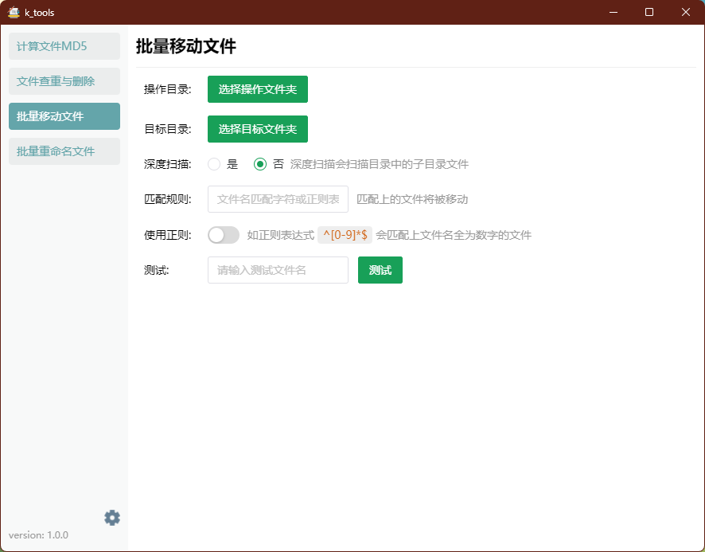

产品特性
功能强大
K Tools 集成了计算文件MD5, 文件查重与删除, 批量移动文件, 批量重命名文件等实用工具, 显著提升办公效率.
易于使用
简洁直观的操作界面, 即使是新手也能快速上手, 节省学习成本.
高度可定制
支持批量操作, 无需挨个挨个操作单一文件.
快速开始

一款集 [计算文件MD5, 文件查重与删除, 批量移动文件, 批量重命名文件] 于一体的实用工具
K Tools 集成了计算文件MD5, 文件查重与删除, 批量移动文件, 批量重命名文件等实用工具, 显著提升办公效率.
简洁直观的操作界面, 即使是新手也能快速上手, 节省学习成本.
支持批量操作, 无需挨个挨个操作单一文件.